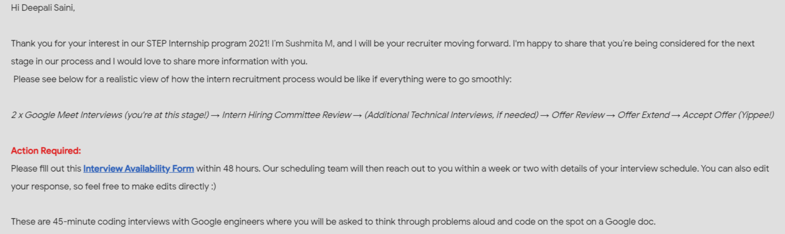

A review by an Interviewee
How was your Google STEP intern interview experience?
I applied for a Google step internship in November 2020.I was in second year (3rd sem).I filled out the basic
form and uploaded my resume with it. At my campus (IGDTUW), STEP interviews were going on-campus. But I was
unable to make it and was rejected during the resume selection phase. I'm guessing barely a few individuals made
it.
It was a fine day in January 2021. I was enjoying my tea and checking my mail around 7 pm. I received a mail
from Google saying that I had been shortlisted and the next round was a technical interview. I was absolutely on
the cloud nine at that time.
BEFORE INTERVIEW :
So, I calculated and I got around 1 week for preparation for the technical rounds. I filled out the availability
form and braced myself. I didn’t know much about higher data structures, like I have knowledge of Arrays,
Strings, Linked Lists, Stacks, Queues and Binary Trees (not so much about trees, just basic). I gave 3 days to
DP . In the last 4 days, I revised all the data structures and questions.
DURING INTERVIEW :
ROUND ONE (45-minutes)
I joined the link and am waiting for the interviewer. Obviously, it’s going to happen. When I said “Good
Morning” at 2 pm, I felt so embarrassed. I corrected it and wished her.
The interviewer starts off with her introduction asking me to follow up with mine. She shared a Google document
with me and asked the first question.
It is from trees (data structure). As far as I remember, it was something like the weight of every branch was
given, and I had to return the minimum number that balanced the weight of the branches. I’m sorry to put this
question like this, but I don’t remember it so clearly. She asked me basic questions regarding trees. I answered
them all. She said to draw a tree on a Google document. I did it. Then she gave me time to think it out and tell
her the basic approach. She muted herself and asked me to do so. I took a deep breath and read the question
again. After some time, she asked me and I gave the naïve approach, but it doesn’t work in all cases. Clearly,
she was not happy with my solution. As time was passing, she asked me to write code on a Google document. I
wrote broken code out there. As last time passed, it came to an end and I asked her a question about the work
culture of Google. She replied and it ended.
I got a 15-minute break to pack up my anxiety and bad performance. I bundled up my all emotions for next
interview.
ROUND-TWO (45 minutes)
This time it was a male interviewer. started with an introduction, the same as previously. He shared a Google
document and I was again ready for this.
He asked me basic question about vectors and gave me an easy question. I told him an approach and coded it in
one go. Then he asked me some edge cases about that. I took time but answered them correctly. I guess he was
quite satisfied. But then he gave me a follow-up question which was a bit hard. I tried, but I got anxious
in-between. I told him an approach. He was helpful. He was dropping some hints. I thought for some time and came
up with a naïve approach and told him. He said okay and it was about to end now. Again, I got a chance to learn
about the work culture of Google. He explained it to me and I listened intently. He talked to me about 20
minutes apart from the interview.
AFTER INTERVIEW
I got out of my chair at 4:00 p.m. and turned off my laptop. I dashed straight to my bed and pretended to be
dead.
QUESTIONS they asked me in the interview :
1. I guess it was from the graph. The question is about weighing branches. I had to return the minimum number
that must be added to every path from root to leaf node. I couldn’t find the same question on the internet. It
was a hard level, for sure.
2. In the second interview, the first question was an easy level, and the follow-up was a medium type. It was
like a matrix and related to the wages question.
Well, it was a great experience for sure, getting shortlisted for giving interviews.

OUTCOME:
I could not make it :-) .
THINGS TO KEEP IN MIND :
Rewrite your introduction, practice more questions , be ready to face any data
structure, grab hints, listen carefully, speak after thinking it, use correct terms while explaining.
THINGS THAT I DID :
I spoke about whatever approach was going through my mind, asked the interviewer about edge
cases, and made the interviewer understand with the help of a dry run, checked test cases, grabbed pen and paper
for an easy dry run.
TIP :
Before an interview, get plenty of rest.